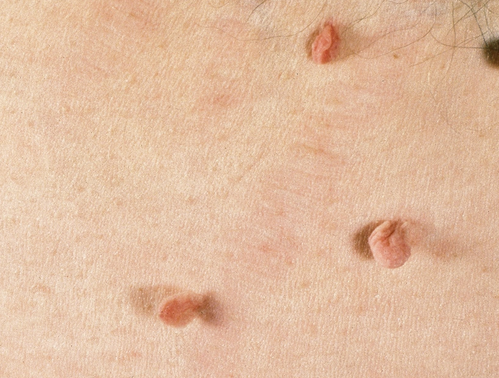

← Alla hudproblem
Leverfläckar, Cherry Spots & Skintags
Säker och effektiv borttagning av godartade hudförändringar
Säker och effektiv borttagning av godartade hudförändringar
Hudförändringar som leverfläckar, cherry spots (cherryangioner) och skintags (fibromer) är mycket vanliga och i de allra flesta fall helt ofarliga. De uppstår naturligt med åldern, solexponering, genetik och hormonella förändringar.
Även om de är medicinskt harmlösa kan de upplevas som kosmetiskt störande – särskilt när de sitter på synliga ställen som ansikte, hals eller dekolletage. Den goda nyheten är att de i de flesta fall enkelt kan tas bort med moderna metoder utan ärr.

Platta, bruna fläckar som uppstår i hudområden som utsatts för UV-strålning under längre tid. De orsakas av en lokal ökning av melanocyter (pigmentceller) i hudens yttersta lager, epidermis. Vanligast på ansikte, handryggar, underarmar och dekolletage hos personer över 40. Trots namnet har de inget med levern att göra – benämningen kommer från den brunaktiga färgen.

Godartade vaskulära tumörer som består av kluster av utvidgade kapillärer (små blodkärl) i dermis. De visar sig som små, runda, klarröda till mörkröda prickar mellan 1–5 mm. De blir vanligare med åldern – uppskattningsvis har över 70% av personer över 70 år minst en cherryangion. Orsaken är inte helt klarlagd men genetik och hormonella förändringar spelar roll.

Små, mjuka, skaftade utväxter av hud som hänger ut från ytan. De består av lös bindväv och blodkärl omgivna av epidermis. Uppstår oftast i områden med friktion – hudveck på hals, armhålor, under bröst och i ljumsken. Vanligare vid övervikt, diabetes typ 2 och under graviditet på grund av hormonella förändringar. Helt godartade men kan bli irriterade av kläder eller smycken.

Den vanligaste godartade hudtumören hos vuxna. Uppstår från keratinocyter i epidermis och visar sig som vaxartade, bruna till svarta upphöjningar med en karaktäristisk "påklistrad" yta. De kan vara platta eller upphöjda, ofta med synliga hornproppar (komedo-liknande öppningar). Har inget med solexponering att göra och kan uppstå var som helst på kroppen utom handflator och fotsulor.

Godartade tumörer av bindväv (fibroblaster och kollagen) som bildas i dermis eller subkutant fett. Känns som fasta eller mjuka, rörliga knutor under huden, oftast 1–3 cm stora. Kan uppstå var som helst på kroppen. Helt harmlösa men kan vara kosmetiskt störande om de sitter på synliga ställen. Skiljer sig från skintags genom att de sitter djupare och inte är skaftade.

En variant av seborroisk keratos som ofta är mörkare pigmenterad och mer upphöjd. Trots namnet orsakas de inte av virus (till skillnad från vanliga vårtor som orsakas av HPV). De uppstår genom en godartad överproduktion av keratinocyter och melanin. Vanligast på bål, ansikte och händer hos personer över 50. Kan växa långsamt över tid men blir aldrig maligna.

Godartade kärlmissbildningar som består av en onormal ansamling av blodkärl i huden. Visar sig som röda, blåröda eller lila upphöjningar som kan vara platta eller knöliga. Infantila hemangiom är vanligast hos spädbarn och växer snabbt de första månaderna, men hos vuxna kan mindre hemangiom finnas kvar eller uppstå senare i livet. De bleknar oftast inte av sig själva hos vuxna.
För upphöjda hudförändringar
Plasma-teknologi som sublimerar (förgasar) vävnaden utan att skada omgivande hud. Perfekt för skintags, upphöjda leverfläckar och fibromer som sticker ut från hudytan.
För cherry spots & ytliga kärlförändringar
Högfrekvent ström som koagulerar (stänger) de utvidgade blodkärlen i cherry spots. Direkt efter behandlingen bildas en liten skorpa som faller av av sig själv – hur snabbt varierar beroende på var på kroppen pricken sitter.
Vi tittar på dina hudförändringar och bekräftar att de är godartade. Du behöver ha fått dem bedömda av dermatolog innan.
Beroende på typ väljer vi Plaxel+ eller diatermi. Området bedövas lokalt vid behov. Vi bokar alltid 30 minuter per tillfälle och tar bort så många hudförändringar vi hinner under den tiden. Vill du ta bort fler prickar kan du boka en dubbel tid (60 minuter).
Du får tydliga instruktioner för hemvård. Huden läker normalt inom 7–14 dagar. Undvik sol på behandlat område.
"No one is more thorough, patient and better at their job than Isabella! The nicest and best professional, always a pleasure to get treatments from her."
– Daphne J.
"Kände mig väl omhändertagen och fick bra information gällande min behandling samt eftervård."
– Ida K.
"Jättemsnäll och trevlig. Alltid nöjd efter avslutande behandling. Isa är så duktig och väldigt bra på att vara rädd om kunder. Aldrig missnöjd, ständigt nöjd. STORT REKOMMENDERAT!"
– Marina S.
"Professionellt bemötande gentemot kunden! Jag är nöjd varje gång! Väldigt bra service och god tid."
– Justyna K.
Boka en konsultation så bedömer vi dina hudförändringar och rekommenderar bästa behandlingsmetod.